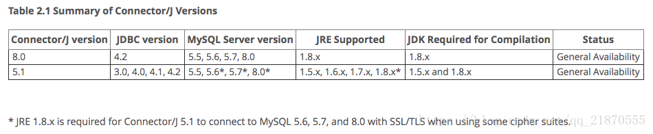

<!DOCTYPE html>


<html lang="en">


<head>
  <meta charset="utf-8" />
    
  <meta name="viewport" content="width=device-width, initial-scale=1, maximum-scale=1" />
  <title>
    SpringBoot-踩坑 |  
  </title>
  <meta name="generator" content="hexo-theme-ayer">
  
  <link rel="shortcut icon" href="/favicon.ico" />
  
  <link rel="stylesheet" href="/dist/main.css">
  <link rel="stylesheet" href="https://cdn.jsdelivr.net/gh/Shen-Yu/cdn/css/remixicon.min.css">
  <link rel="stylesheet" href="/css/custom.css">
  
  <script src="https://cdn.jsdelivr.net/npm/pace-js@1.0.2/pace.min.js"></script>
  
  

  

  <link rel="stylesheet" href="https://cdn.jsdelivr.net/gh/highlightjs/cdn-release@latest/build/styles/vs2015.min.css"><!- highlight.js ->
  <script src="https://cdn.jsdelivr.net/gh/highlightjs/cdn-release@latest/build/highlight.min.js"></script>
  <script>
    hljs.initHighlightingOnLoad();
  </script>
</head>

</html>


<body>
  <div id="app">
    
      
    <main class="content on">
      <section class="outer">
  <article
  id="post-SpringBoot-踩坑"
  class="article article-type-post"
  itemscope
  itemprop="blogPost"
  data-scroll-reveal
>
  <div class="article-inner">
    
    <header class="article-header">
       
<h1 class="article-title sea-center" style="border-left:0" itemprop="name">
  SpringBoot-踩坑
</h1>
 

    </header>
     
    <div class="article-meta">
      <a href="/2020/02/10/SpringBoot-%E8%B8%A9%E5%9D%91/" class="article-date">
  <time datetime="2020-02-10T04:39:04.000Z" itemprop="datePublished">2020-02-10</time>
</a> 
  <div class="article-category">
    <a class="article-category-link" href="/categories/%E5%90%8E%E7%AB%AF/">后端</a>
  </div>

  
<div class="word_count">
    <span class="post-time">
        <span class="post-meta-item-icon">
            <i class="ri-quill-pen-line"></i>
            <span class="post-meta-item-text"> Word count:</span>
            <span class="post-count">1k</span>
        </span>
    </span>

    <span class="post-time">
        &nbsp; | &nbsp;
        <span class="post-meta-item-icon">
            <i class="ri-book-open-line"></i>
            <span class="post-meta-item-text"> Reading time≈</span>
            <span class="post-count">5 min</span>
        </span>
    </span>
</div>
 
    </div>
      
    <div class="tocbot"></div>


  
    <div class="article-entry" itemprop="articleBody">
       
  <h2 id="常用功能"><a href="#常用功能" class="headerlink" title="常用功能"></a>常用功能</h2><h3 id="多环境切换"><a href="#多环境切换" class="headerlink" title="多环境切换"></a>多环境切换</h3><h4 id="yml方式"><a href="#yml方式" class="headerlink" title="yml方式"></a>yml方式</h4><p>可将多个环境的配置放在一个<code>application.yml</code>文件里，使用<code>---</code>来进行分割:</p>
<pre><code class="yml">server:
  port: 8090
spring:
  profiles:
    active: dev

---
server:
  port: 8092
spring:
  profiles: dev
---
server:
  port: 8091
spring:
  profiles: prd
</code></pre>
<p>使用active属性来进行环境切换</p>
<hr>
<h2 id="Q-amp-A"><a href="#Q-amp-A" class="headerlink" title="Q &amp; A"></a>Q &amp; A</h2><h3 id="MySQL-相关"><a href="#MySQL-相关" class="headerlink" title="MySQL 相关"></a>MySQL 相关</h3><h4 id="java-sql-SQLException-Unable-to-load-authentication-plugin-39-caching-sha2-password-39"><a href="#java-sql-SQLException-Unable-to-load-authentication-plugin-39-caching-sha2-password-39" class="headerlink" title="java.sql.SQLException: Unable to load authentication plugin &#39;caching_sha2_password&#39;."></a><code>java.sql.SQLException: Unable to load authentication plugin &#39;caching_sha2_password&#39;.</code></h4><p><em>出错原因</em>：</p>
<p>mysql 8.0 默认使用 caching_sha2_password 身份验证机制，而之前的版本默认使用 mysql_native_password 身份验证机制</p>
<p><em>解决办法</em>：</p>
<p>修改加密规则 ：</p>
<pre><code>ALTER USER &#39;root&#39;@&#39;localhost&#39; IDENTIFIED BY &#39;password&#39; PASSWORD EXPIRE NEVER;
ALTER USER &#39;root&#39;@&#39;localhost&#39; IDENTIFIED WITH mysql_native_password BY &#39;password&#39;;</code></pre><p>刷新权限：</p>
<pre><code>FLUSH PRIVILEGES;</code></pre><p>重置密码：</p>
<pre><code>ALTER USER &#39;root&#39;@&#39;localhost&#39; IDENTIFIED BY &#39;Friday13&#39;;</code></pre><h4 id="Unknown-system-variable-39-query-cache-size-39"><a href="#Unknown-system-variable-39-query-cache-size-39" class="headerlink" title="Unknown system variable &#39;query_cache_size&#39;"></a><code>Unknown system variable &#39;query_cache_size&#39;</code></h4><p><em>出错原因</em>：</p>
<p>mysql-connecter-java的版本过低，很显然是数据库驱动程序与数据库版本不对应</p>
<p><em>解决办法</em>：</p>
<p>如 mybatis使用 mysql-5.1.14的驱动程序，而mybatis配置的数据源连接的是 mysql-8.0.11 ，修改 pom文件即可</p>
<pre><code class="xml">&lt;dependency&gt;
    &lt;groupId&gt;mysql&lt;/groupId&gt;
    &lt;artifactId&gt;mysql-connector-java&lt;/artifactId&gt;
    &lt;version&gt;8.0.11&lt;/version&gt;
&lt;/dependency&gt;</code></pre>
<pre><code class="gradle">// 依赖关系
dependencies {
    // 添加 MySQL连接驱动 的依赖
    compile(&#39;mysql:mysql-connector-java:8.0.11&#39;)
}</code></pre>
<p>官方的说法是 :</p>
<p>The query cache is deprecated as of MySQL 5.7.20, and is removed in MySQL 8.0. Deprecation includes query_cache_size.</p>
<p>意思是query cache在MySQL5.7.20就已经过时了，而在MySQL8.0之后就已经被移除了。</p>
<p>下表从官网总结了可用的Connector / JDBC版本，以及JDBC驱动程序类型的详细信息，支持的JDBC API版本，支持的MySQL服务器版本，支持的JRE，构建所需的JDK以及每个连接器的支持状态/ JDBC版本</p>
<p></img></p>
<h4 id="运行程序不报错，单元测试报错java-lang-IllegalStateException-Failed-to-load-ApplicationContext"><a href="#运行程序不报错，单元测试报错java-lang-IllegalStateException-Failed-to-load-ApplicationContext" class="headerlink" title="运行程序不报错，单元测试报错java.lang.IllegalStateException: Failed to load ApplicationContext"></a>运行程序不报错，单元测试报错<code>java.lang.IllegalStateException: Failed to load ApplicationContext</code></h4><pre><code>Failed to load ApplicationContext
java.lang.IllegalStateException: Failed to load ApplicationContext
    at org.springframework.test.context.cache.DefaultCacheAwareContextLoaderDelegate.loadContext(DefaultCacheAwareContextLoaderDelegate.java:124)
    at org.springframework.test.context.support.DefaultTestContext.getApplicationContext(DefaultTestContext.java:83)
    at org.springframework.test.context.web.ServletTestExecutionListener.setUpRequestContextIfNecessary(ServletTestExecutionListener.java:189)
    at org.springframework.test.context.web.ServletTestExecutionListener.prepareTestInstance(ServletTestExecutionListener.java:131)
    at org.springframework.test.context.TestContextManager.prepareTestInstance(TestContextManager.java:230)
    ...
Caused by: org.springframework.beans.factory.BeanCreationException: Error creating bean with name &#39;entityManagerFactory&#39; defined in class path resource [org/springframework/boot/autoconfigure/orm/jpa/HibernateJpaAutoConfiguration.class]: Invocation of init method failed; nested exception is java.lang.NoClassDefFoundError: javax/xml/bind/JAXBException
    at org.springframework.beans.factory.support.AbstractAutowireCapableBeanFactory.initializeBean(AbstractAutowireCapableBeanFactory.java:1628)</code></pre><p><em>出错原因</em>：</p>
<p>有bean没有加上jpa注解</p>
<h4 id="SpringBoot无法访问-static下静态资源"><a href="#SpringBoot无法访问-static下静态资源" class="headerlink" title="SpringBoot无法访问/static下静态资源"></a>SpringBoot无法访问/static下静态资源</h4><p><em>出错原因</em>：</p>
<p><code>@EnableWebMvc</code>注解导致了<code>WebMvcAutoConfiguration</code>类没有生效</p>
<p><em>原因分析</em>：</p>
<p>SpringBoot 访问静态资源的规则，都在<code>WebMvcAutoConfiguration</code>自动配置类中</p>
<p><code>WebMvcAutoConfiguration.java</code>:</p>
<pre><code class="java">    @Override
        public void addResourceHandlers(ResourceHandlerRegistry registry) {
            if (!this.resourceProperties.isAddMappings()) {
                logger.debug(&quot;Default resource handling disabled&quot;);
                return;
            }
            Duration cachePeriod = this.resourceProperties.getCache().getPeriod();
            CacheControl cacheControl = this.resourceProperties.getCache().getCachecontrol().toHttpCacheControl();
            if (!registry.hasMappingForPattern(&quot;/webjars/**&quot;)) {
                customizeResourceHandlerRegistration(registry.addResourceHandler(&quot;/webjars/**&quot;)
                        .addResourceLocations(&quot;classpath:/META-INF/resources/webjars/&quot;)
                        .setCachePeriod(getSeconds(cachePeriod)).setCacheControl(cacheControl));
            }
            String staticPathPattern = this.mvcProperties.getStaticPathPattern();
            if (!registry.hasMappingForPattern(staticPathPattern)) {
                customizeResourceHandlerRegistration(registry.addResourceHandler(staticPathPattern)
                        .addResourceLocations(getResourceLocations(this.resourceProperties.getStaticLocations()))
                        .setCachePeriod(getSeconds(cachePeriod)).setCacheControl(cacheControl));
            }
        }</code></pre>
<p><code>ResourceProperties.java</code>:</p>
<pre><code class="java">    private static final String[] CLASSPATH_RESOURCE_LOCATIONS = { &quot;classpath:/META-INF/resources/&quot;,
            &quot;classpath:/resources/&quot;, &quot;classpath:/static/&quot;, &quot;classpath:/public/&quot; };

    /**
     * Locations of static resources. Defaults to classpath:[/META-INF/resources/,
     * /resources/, /static/, /public/].
     */
    private String[] staticLocations = CLASSPATH_RESOURCE_LOCATIONS;

  //...

    public String[] getStaticLocations() {
        return this.staticLocations;
    }</code></pre>
<p>默认按照该(<code>CLASSPATH_RESOURCE_LOCATIONS</code>)加载顺序，加载静态资源文件</p>
<p>继续看<code>WebMvcAutoConfiguration.java</code>:</p>
<pre><code class="java">@Configuration(proxyBeanMethods = false)
@ConditionalOnWebApplication(type = Type.SERVLET)
@ConditionalOnClass({ Servlet.class, DispatcherServlet.class, WebMvcConfigurer.class })
@ConditionalOnMissingBean(WebMvcConfigurationSupport.class)
@AutoConfigureOrder(Ordered.HIGHEST_PRECEDENCE + 10)
@AutoConfigureAfter({ DispatcherServletAutoConfiguration.class, TaskExecutionAutoConfiguration.class,
        ValidationAutoConfiguration.class })
public class WebMvcAutoConfiguration {
  //...
}</code></pre>
<p>发现有以下注解<code>@ConditionalOnMissingBean(WebMvcConfigurationSupport.class)</code>: 在WebMvcConfigurationSupport.class这个类没有的情况下，才会走SpringBoot的Web自动配置</p>
<p><code>@EnableWebMvc.java</code>:</p>
<pre><code class="java">@Retention(RetentionPolicy.RUNTIME)
@Target(ElementType.TYPE)
@Documented
@Import(DelegatingWebMvcConfiguration.class)
public @interface EnableWebMvc {
}</code></pre>
<p><code>DelegatingWebMvcConfiguration.java</code>:</p>
<pre><code class="java">@Configuration(proxyBeanMethods = false)
public class DelegatingWebMvcConfiguration extends WebMvcConfigurationSupport {
  //...
}</code></pre>
<p>可以看到<code>@EnableWebMvc</code>注解加载了<code>DelegatingWebMvcConfiguration.class</code>类，而这个类又继承了<code>WebMvcConfigurationSupport</code>类</p>
<p><em>解决办法</em>：去掉<code>@EnableWebMvc</code>注解</p>
<blockquote>

<p>If you want to keep Spring Boot MVC features and you want to add additional <a href="https://docs.spring.io/spring/docs/5.1.9.RELEASE/spring-framework-reference/web.html#mvc" target="_blank" rel="noopener">MVC configuration</a> (interceptors, formatters, view controllers, and other features), you can add your own <code>@Configuration</code> class of type WebMvcConfigurer but without <code>@EnableWebMvc</code>. If you wish to provide custom instances of <code>RequestMappingHandlerMapping</code>, <code>RequestMappingHandlerAdapter</code>, or <code>ExceptionHandlerExceptionResolver</code>, you can declare a <code>WebMvcRegistrationsAdapter</code> instance to provide such components.</p>
<p>If you want to take complete control of Spring MVC, you can add your own <code>@Configuration</code> annotated with <code>@EnableWebMvc</code>.</p>
</blockquote>

<p><em>官方解释</em>：<a href="https://docs.spring.io/spring-boot/docs/2.1.7.RELEASE/reference/html/boot-features-developing-web-applications.html#boot-features-spring-mvc-auto-configuration" target="_blank" rel="noopener">https://docs.spring.io/spring-boot/docs/2.1.7.RELEASE/reference/html/boot-features-developing-web-applications.html#boot-features-spring-mvc-auto-configuration</a></p>
 
      <!-- reward -->
      
      <div id="reword-out">
        <div id="reward-btn">
          Donate
        </div>
      </div>
      
    </div>
    

    <!-- copyright -->
    
    <div class="declare">
      <ul class="post-copyright">
        <li>
          <i class="ri-copyright-line"></i>
          <strong>Copyright： </strong>
          Copyright is owned by the author. For commercial reprints, please contact the author for authorization. For non-commercial reprints, please indicate the source.
        </li>
      </ul>
    </div>
    
    <footer class="article-footer">
       
<div class="share-btn">
      <span class="share-sns share-outer">
        <i class="ri-share-forward-line"></i>
        分享
      </span>
      <div class="share-wrap">
        <i class="arrow"></i>
        <div class="share-icons">
          
          <a class="weibo share-sns" href="javascript:;" data-type="weibo">
            <i class="ri-weibo-fill"></i>
          </a>
          <a class="weixin share-sns wxFab" href="javascript:;" data-type="weixin">
            <i class="ri-wechat-fill"></i>
          </a>
          <a class="qq share-sns" href="javascript:;" data-type="qq">
            <i class="ri-qq-fill"></i>
          </a>
          <a class="douban share-sns" href="javascript:;" data-type="douban">
            <i class="ri-douban-line"></i>
          </a>
          <!-- <a class="qzone share-sns" href="javascript:;" data-type="qzone">
            <i class="icon icon-qzone"></i>
          </a> -->
          
          <a class="facebook share-sns" href="javascript:;" data-type="facebook">
            <i class="ri-facebook-circle-fill"></i>
          </a>
          <a class="twitter share-sns" href="javascript:;" data-type="twitter">
            <i class="ri-twitter-fill"></i>
          </a>
          <a class="google share-sns" href="javascript:;" data-type="google">
            <i class="ri-google-fill"></i>
          </a>
        </div>
      </div>
</div>

<div class="wx-share-modal">
    <a class="modal-close" href="javascript:;"><i class="ri-close-circle-line"></i></a>
    <p>扫一扫，分享到微信</p>
    <div class="wx-qrcode">
      
    </div>
</div>

<div id="share-mask"></div>  
  <ul class="article-tag-list" itemprop="keywords"><li class="article-tag-list-item"><a class="article-tag-list-link" href="/tags/Spring-Boot/" rel="tag">Spring Boot</a></li><li class="article-tag-list-item"><a class="article-tag-list-link" href="/tags/%E8%B8%A9%E5%9D%91/" rel="tag">踩坑</a></li></ul>

    </footer>
  </div>

   
  <nav class="article-nav">
    
      <a href="/2020/03/07/MAC-%E5%BC%80%E5%8F%91%E7%8E%AF%E5%A2%83%E9%85%8D%E7%BD%AE/" class="article-nav-link">
        <strong class="article-nav-caption">上一篇</strong>
        <div class="article-nav-title">
          
            MAC 开发环境配置
          
        </div>
      </a>
    
    
      <a href="/2019/12/06/JavaScript%20%E8%AE%BE%E8%AE%A1%E6%A8%A1%E5%BC%8F/" class="article-nav-link">
        <strong class="article-nav-caption">下一篇</strong>
        <div class="article-nav-title">JavaScript 设计模式</div>
      </a>
    
  </nav>

   
 
   
<div class="gitalk" id="gitalk-container"></div>
<link rel="stylesheet" href="https://cdn.jsdelivr.net/npm/gitalk@1.6.2/dist/gitalk.css">
<script src="https://cdn.jsdelivr.net/npm/gitalk@1.6.2/dist/gitalk.min.js"></script>
<script src="https://cdn.jsdelivr.net/npm/blueimp-md5@2.10.0/js/md5.min.js"></script>
<script type="text/javascript">
  var gitalk = new Gitalk({
    clientID: 'db290dc011893521d885',
    clientSecret: '4cbc64d2114f4963d8090a55b508568b2f26075b',
    repo: 'blog-comments',
    owner: 'Sicmatr1x',
    admin: ['Sicmatr1x'],
    // id: location.pathname,      // Ensure uniqueness and length less than 50
    id: md5(location.pathname),
    distractionFreeMode: false,  // Facebook-like distraction free mode
    pagerDirection: 'last'
  })

  gitalk.render('gitalk-container')
</script>
  
</article>

</section>
      <footer class="footer">
  <div class="outer">
    <ul>
      <li>
        Copyrights &copy;
        2015-2020
        <i class="ri-heart-fill heart_icon"></i> Sicmatr1x
      </li>
    </ul>
    <ul>
      <li>
        
        
        
        Powered by <a href="https://hexo.io" target="_blank">Hexo</a>
        <span class="division">|</span>
        Theme - <a href="https://github.com/Shen-Yu/hexo-theme-ayer" target="_blank">Ayer</a>
        
      </li>
    </ul>
    <ul>
      <li>
        
        
        <span>
  <span><i class="ri-user-3-fill"></i>Visitors:<span id="busuanzi_value_site_uv"></span></s>
  <span class="division">|</span>
  <span><i class="ri-eye-fill"></i>Views:<span id="busuanzi_value_page_pv"></span></span>
</span>
        
      </li>
    </ul>
    <ul>
      
    </ul>
    <ul>
      <li>
        <!-- cnzz统计 -->
        
      </li>
    </ul>
  </div>
</footer>
      <div class="float_btns">
        <div class="totop" id="totop">
  <i class="ri-arrow-up-line"></i>
</div>

<div class="todark" id="todark">
  <i class="ri-moon-line"></i>
</div>

      </div>
    </main>
    <aside class="sidebar on">
      <button class="navbar-toggle"></button>
<nav class="navbar">
  
  <div class="logo">
    <a href="/"></a>
  </div>
  
  <ul class="nav nav-main">
    
    <li class="nav-item">
      <a class="nav-item-link" href="/">主页</a>
    </li>
    
    <li class="nav-item">
      <a class="nav-item-link" href="/archives">归档</a>
    </li>
    
    <li class="nav-item">
      <a class="nav-item-link" href="/categories">分类</a>
    </li>
    
    <li class="nav-item">
      <a class="nav-item-link" href="/tags">标签</a>
    </li>
    
    <li class="nav-item">
      <a class="nav-item-link" href="/about">关于我</a>
    </li>
    
  </ul>
</nav>
<nav class="navbar navbar-bottom">
  <ul class="nav">
    <li class="nav-item">
      
      <a class="nav-item-link nav-item-search"  title="Search">
        <i class="ri-search-line"></i>
      </a>
      
      
      <a class="nav-item-link" target="_blank" href="/atom.xml" title="RSS Feed">
        <i class="ri-rss-line"></i>
      </a>
      
    </li>
  </ul>
</nav>
<div class="search-form-wrap">
  <div class="local-search local-search-plugin">
  <input type="search" id="local-search-input" class="local-search-input" placeholder="Search...">
  <div id="local-search-result" class="local-search-result"></div>
</div>
</div>
    </aside>
    <script>
      if (window.matchMedia("(max-width: 768px)").matches) {
        document.querySelector('.content').classList.remove('on');
        document.querySelector('.sidebar').classList.remove('on');
      }
    </script>
    <div id="mask"></div>

<!-- #reward -->
<div id="reward">
  <span class="close"><i class="ri-close-line"></i></span>
  <p class="reward-p"><i class="ri-cup-line"></i>请我喝杯咖啡吧~</p>
  <div class="reward-box">
    
    <div class="reward-item">
      
      <span class="reward-type">支付宝</span>
    </div>
    
    
    <div class="reward-item">
      
      <span class="reward-type">微信</span>
    </div>
    
  </div>
</div>
    <script src="/js/jquery-2.0.3.min.js"></script>
<script src="/js/lazyload.min.js"></script>
<!-- Tocbot -->

<script src="/js/tocbot.min.js"></script>
<script>
  tocbot.init({
    tocSelector: '.tocbot',
    contentSelector: '.article-entry',
    headingSelector: 'h1, h2, h3, h4, h5, h6',
    hasInnerContainers: true,
    scrollSmooth: true,
    scrollContainer: 'main',
    positionFixedSelector: '.tocbot',
    positionFixedClass: 'is-position-fixed',
    fixedSidebarOffset: 'auto'
  });
</script>

<script src="https://cdn.jsdelivr.net/npm/jquery-modal@0.9.2/jquery.modal.min.js"></script>
<link rel="stylesheet" href="https://cdn.jsdelivr.net/npm/jquery-modal@0.9.2/jquery.modal.min.css">
<script src="https://cdn.jsdelivr.net/npm/justifiedGallery@3.7.0/dist/js/jquery.justifiedGallery.min.js"></script>
<script src="/dist/main.js"></script>
<!-- ImageViewer -->

<!-- Root element of PhotoSwipe. Must have class pswp. -->
<div class="pswp" tabindex="-1" role="dialog" aria-hidden="true">

    <!-- Background of PhotoSwipe. 
         It's a separate element as animating opacity is faster than rgba(). -->
    <div class="pswp__bg"></div>

    <!-- Slides wrapper with overflow:hidden. -->
    <div class="pswp__scroll-wrap">

        <!-- Container that holds slides. 
            PhotoSwipe keeps only 3 of them in the DOM to save memory.
            Don't modify these 3 pswp__item elements, data is added later on. -->
        <div class="pswp__container">
            <div class="pswp__item"></div>
            <div class="pswp__item"></div>
            <div class="pswp__item"></div>
        </div>

        <!-- Default (PhotoSwipeUI_Default) interface on top of sliding area. Can be changed. -->
        <div class="pswp__ui pswp__ui--hidden">

            <div class="pswp__top-bar">

                <!--  Controls are self-explanatory. Order can be changed. -->

                <div class="pswp__counter"></div>

                <button class="pswp__button pswp__button--close" title="Close (Esc)"></button>

                <button class="pswp__button pswp__button--share" style="display:none" title="Share"></button>

                <button class="pswp__button pswp__button--fs" title="Toggle fullscreen"></button>

                <button class="pswp__button pswp__button--zoom" title="Zoom in/out"></button>

                <!-- Preloader demo http://codepen.io/dimsemenov/pen/yyBWoR -->
                <!-- element will get class pswp__preloader--active when preloader is running -->
                <div class="pswp__preloader">
                    <div class="pswp__preloader__icn">
                        <div class="pswp__preloader__cut">
                            <div class="pswp__preloader__donut"></div>
                        </div>
                    </div>
                </div>
            </div>

            <div class="pswp__share-modal pswp__share-modal--hidden pswp__single-tap">
                <div class="pswp__share-tooltip"></div>
            </div>

            <button class="pswp__button pswp__button--arrow--left" title="Previous (arrow left)">
            </button>

            <button class="pswp__button pswp__button--arrow--right" title="Next (arrow right)">
            </button>

            <div class="pswp__caption">
                <div class="pswp__caption__center"></div>
            </div>

        </div>

    </div>

</div>

<link rel="stylesheet" href="https://cdn.jsdelivr.net/npm/photoswipe@4.1.3/dist/photoswipe.min.css">
<link rel="stylesheet" href="https://cdn.jsdelivr.net/npm/photoswipe@4.1.3/dist/default-skin/default-skin.min.css">
<script src="https://cdn.jsdelivr.net/npm/photoswipe@4.1.3/dist/photoswipe.min.js"></script>
<script src="https://cdn.jsdelivr.net/npm/photoswipe@4.1.3/dist/photoswipe-ui-default.min.js"></script>

<script>
    function viewer_init() {
        let pswpElement = document.querySelectorAll('.pswp')[0];
        let $imgArr = document.querySelectorAll(('.article-entry img:not(.reward-img)'))

        $imgArr.forEach(($em, i) => {
            $em.onclick = () => {
                // slider展开状态
                // todo: 这样不好，后面改成状态
                if (document.querySelector('.left-col.show')) return
                let items = []
                $imgArr.forEach(($em2, i2) => {
                    let img = $em2.getAttribute('data-idx', i2)
                    let src = $em2.getAttribute('data-target') || $em2.getAttribute('src')
                    let title = $em2.getAttribute('alt')
                    // 获得原图尺寸
                    const image = new Image()
                    image.src = src
                    items.push({
                        src: src,
                        w: image.width || $em2.width,
                        h: image.height || $em2.height,
                        title: title
                    })
                })
                var gallery = new PhotoSwipe(pswpElement, PhotoSwipeUI_Default, items, {
                    index: parseInt(i)
                });
                gallery.init()
            }
        })
    }
    viewer_init()
</script>

<!-- MathJax -->

<!-- Katex -->

<!-- busuanzi  -->

<script src="/js/busuanzi-2.3.pure.min.js"></script>

<!-- ClickLove -->

<!-- ClickBoom1 -->

<!-- ClickBoom2 -->

<!-- CodeCopy -->

<link rel="stylesheet" href="/css/clipboard.css">
<script src="https://cdn.jsdelivr.net/npm/clipboard@2/dist/clipboard.min.js"></script>
<script>
  function wait(callback, seconds) {
    var timelag = null;
    timelag = window.setTimeout(callback, seconds);
  }
  !function (e, t, a) {
    var initCopyCode = function(){
      var copyHtml = '';
      copyHtml += '<button class="btn-copy" data-clipboard-snippet="">';
      copyHtml += '<i class="ri-file-copy-2-line"></i><span>COPY</span>';
      copyHtml += '</button>';
      $(".highlight .code pre").before(copyHtml);
      $(".article pre code").before(copyHtml);
      var clipboard = new ClipboardJS('.btn-copy', {
        target: function(trigger) {
          return trigger.nextElementSibling;
        }
      });
      clipboard.on('success', function(e) {
        let $btn = $(e.trigger);
        $btn.addClass('copied');
        let $icon = $($btn.find('i'));
        $icon.removeClass('ri-file-copy-2-line');
        $icon.addClass('ri-checkbox-circle-line');
        let $span = $($btn.find('span'));
        $span[0].innerText = 'COPIED';
        
        wait(function () { // 等待两秒钟后恢复
          $icon.removeClass('ri-checkbox-circle-line');
          $icon.addClass('ri-file-copy-2-line');
          $span[0].innerText = 'COPY';
        }, 2000);
      });
      clipboard.on('error', function(e) {
        e.clearSelection();
        let $btn = $(e.trigger);
        $btn.addClass('copy-failed');
        let $icon = $($btn.find('i'));
        $icon.removeClass('ri-file-copy-2-line');
        $icon.addClass('ri-time-line');
        let $span = $($btn.find('span'));
        $span[0].innerText = 'COPY FAILED';
        
        wait(function () { // 等待两秒钟后恢复
          $icon.removeClass('ri-time-line');
          $icon.addClass('ri-file-copy-2-line');
          $span[0].innerText = 'COPY';
        }, 2000);
      });
    }
    initCopyCode();
  }(window, document);
</script>


<!-- CanvasBackground -->


    
  </div>
</body>

</html>
